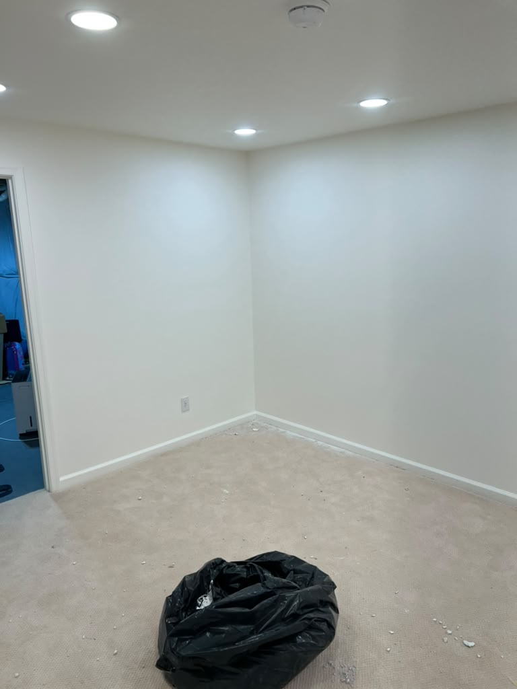
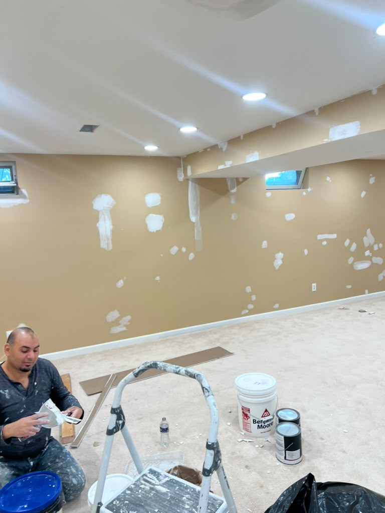

01 / AT HOME
01 / AT HOMEInterior painting
Walls, ceilings, trim, bedrooms, living spaces, rentals, and whole-home refreshes.
From one room to a whole property, our team helps you choose the right scope, finish, and next step.

We work across New Castle County on homes, businesses, and the surfaces that make a space feel complete. Every estimate starts with a clear conversation about preparation and finish.
01 / AT HOMEWalls, ceilings, trim, bedrooms, living spaces, rentals, and whole-home refreshes.
02 / FIRST IMPRESSIONSSiding, porches, doors, shutters, trim, and the outdoor details that welcome people in.
 03 / THE FINER DETAILS
03 / THE FINER DETAILSFresh finishes for cabinets, built-ins, doors, stair details, and architectural woodwork.
 04 / YOUR BUSINESS
04 / YOUR BUSINESSOffices, storefronts, restaurants, and customer-facing interiors and exteriors.

05 / YOUR SIGNATUREAccent walls, two-tone rooms, contrasting trim, and a palette shaped around your space.

06 / BRING IT TOGETHERCombine your painting needs into one clear project plan and one straightforward estimate.
No obligation. Just a clear next step.